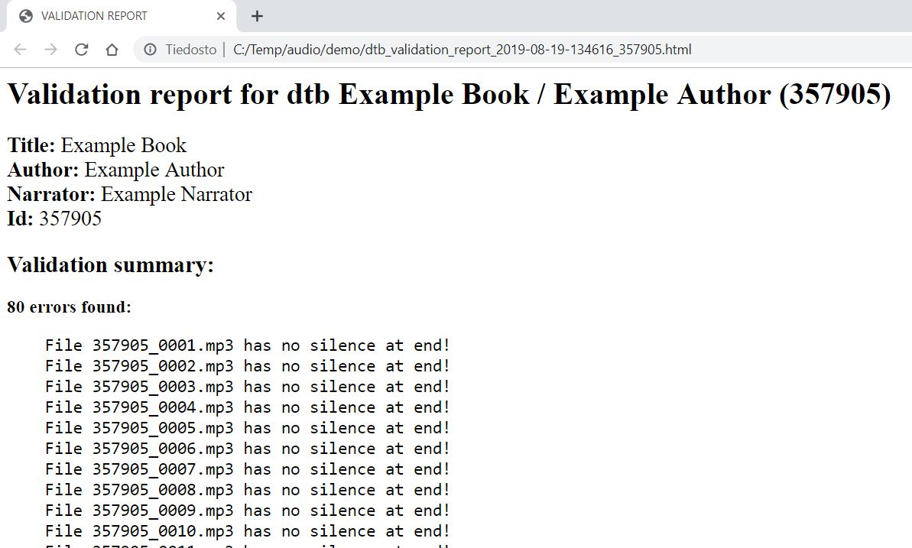
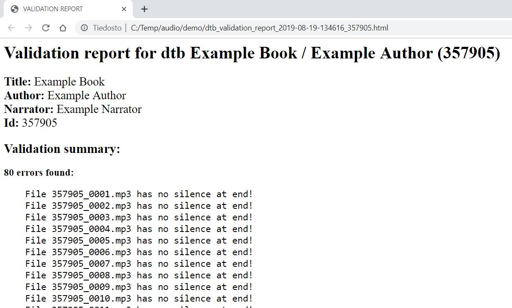

Celia DTB Validator user manual
Installation
Celia DTB Validator is designed and tested for Windows 10, using Python 3.8.7.
For audio and Daisy validation it is required that following programs are also installed:
FFmpeg 4.4
Daisy Pipeline 1 v. 20111215.
Other versions of FFmpeg might also work, but have not been tested and might not work.
If validation is done for audio only, Daisy Pipeline is not required.
Please refer to the documentation of the programs mentioned for more information
on installation and usage.
FFmpeg must be in in PATH, ie. so that it works with command 'ffmpeg'.
It is also to be noted that FFmpeg might also require aditional modules to
be installed in order for it to be able to work with files in mp3 format.
Please refer to documentation provided by FFmpeg for more information.
Also should be noted, that pipeline uses Java, so that must also be installed,
if validating Daisy books.
For installation of Celia DTB Validator the files can be placed in any location.
Celia DTB Validator is written in pure Python3 and does not require any additional
Python modules to run. Usage of virtualenv is recomended but not required as there
are no additional third party modules needed to install.
For basic usage use validator_gui.py to run Celia DTB Validator GUI.
For advanced usage use celia_dtb_validator.py from cmd or Powershell.
Usage
Celia DTB Validator can be run from command line or using a minimalistic GUI.
These are the key components:
Input path: Path to the folder containing book to be validated
Output path: Path to folder where encoded book is placed (if audio encoding is enabled)
Report path: Path to folder where validation report is stored
Config file: File where all variables (for example valid LUFS values etc.) can be set
and where audio and daisy validations and audio encoding can be enabled/disabled.
Config file is located on the same folder as the file celia_dtb_validator.py.
Graphical user interface
 Minimalistic GUI enables user to define all paths, open the config file for editing and to start the validation.
Validation output is shown on Python3 prompt. After validation is finished the report is shown in users
default webbrowser.

After examining the report the user can then decide wheter or not to proceed with audio encoding.
Minimalistic GUI enables user to define all paths, open the config file for editing and to start the validation.
Validation output is shown on Python3 prompt. After validation is finished the report is shown in users
default webbrowser.

After examining the report the user can then decide wheter or not to proceed with audio encoding.

Command line interface
Command line interface can be run with following command:
python celia_dtb_validator.py -i BOOKPATH [-o OUTPUTPATH] [-r REPORTPATH]
There is also parameter -h to print basic usage info and -v to print version number.
NOTE ON PATHS WITH SPACES:
If you use paths with spaces you should leave out the last backslash. The last backslash will be interpreted as escape character.
Use 'C:\Temp\Path With Spaces' instead of 'C:\Temp\Path With Spaces\'
You can also use double quotes ie. "'C:\Temp\Path With Spaces\'", or use forward slahes instead, ie. 'C:/Temp/Path With Spaces/'
Configuration
All setting can be configured using the config.txt file. Please see config.txt for more information.
Note: If you mess up your configuration file a new one is generated automatically, if you delete
or rename the current config.txt file.
Examples
Daisy production example
1. Record book as usual.
2. Regenerate book using book id as file name prefix (optional)
3. Change dc:identifier on (regenerated) books ncc.html to book id
(optional - dc:identifier is used as mp3 encoded books foldername
(if empty folder is named as 'mp3'))
4. Run validation on (regenerated) book using folowing configurations
audio_validation = 1
daisy_validation = 1
encode_audio = 1
target_kbps = 64 (or some other value)
5. Examine validation report
6. Validator ask if you wish to continue with audio encoding
if there are errors -> answer no and fix them on original book and do steps 2-5 again
if no errors are found -> answer 'y'
7. After encoding the encoded audio book is in output-folders
Daisy and audio validation example
1. Run validation on any Daisy book using folowing configurations
audio_validation = 1
daisy_validation = 1
encode_audio = 0
2. Examine validation report
if there are errors -> fix/report them etc.
Mp3 playlist audiobook audio validation
1. Record audio and generate playlist as usual
2. Run validation on folder containing audio files using folowing configurations:
audio_validation = 1
daisy_validation = 0
encode_audio = 0 (optional -> disabling daisy validations automatically disables audio encoding)
3. Examine validator report
if there are errors -> fix errors and do steps 1-3 again
Batch validate all daisy books in a folder
1. Put all books in one folder
2. Use folowing configurations:
audio_validation = 1
daisy_validation = 1
encode_audio = 0
3. Run following Powershell command:
$dtbs = ls -Directory -Path PATHTOFOLDER | % { $_.FullName } ; foreach ($dtb in $dtbs) {python PATHTOVALIDATOR\celia_dtb_validator.py -i $dtb -r PATHTOFOLDER}
4. Reports are opened into default webbrowser in tabs and stored into PATHTOFOLDER.